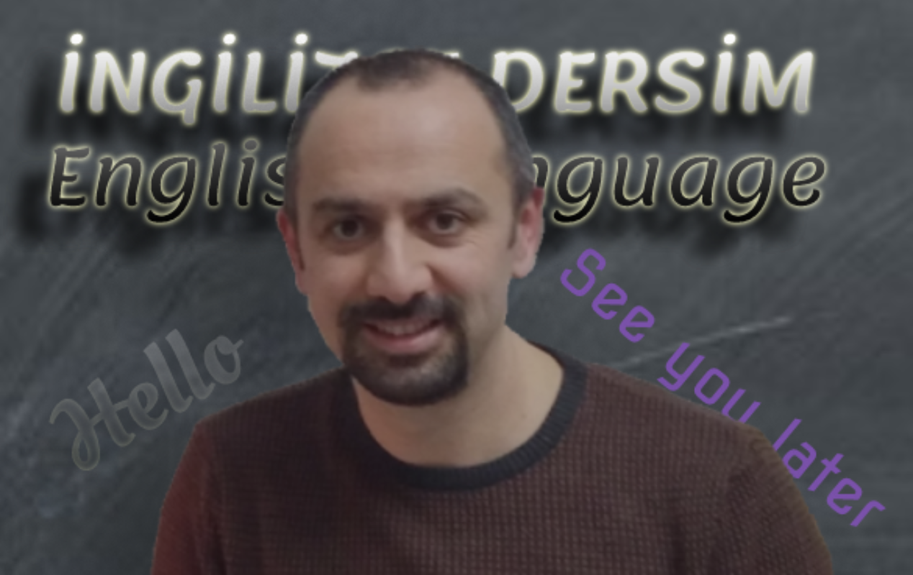

HAKKIMDA
Ben Kimim?
Merhaba, ben Murat Develi. 2004 yılında, Marmara Üniveristesi, Atatürk Eğitim Fakültesi Yabancı Diller Ana Bilim Dalı, İngilizce Öğretmenliği bölümünden mezun oldum. 18 yıldır, ilkokuldan lise düzeyine kadar, çok farklı yaş gruplarına İngilizce dersleri vermekteyim. Son 3 yıldır, yüz yüze verdiğim derslerin yanında online (zoom) üzerinden farklı kademelerdeki öğrencilere sınıf müfredatı çerçevesinde İngilizce dersler veriyorum. Derslerimizde; öğrencilerin üniteler kapsamında sorumlu oldukları gramer kuralları, cümle yapıları, kelime anlam ve doğru telaffuz çalışmaları, yazıılı ve sözlü sınavlara hazırlık çalışmaları son derece kapsamlı bir şekilde öğrencilerin düzeyleri ve kavrama hızları da göz önünde bulundurularak yapılmaktadır. Ayrıca, okul İngilizce ders programı dışında, ilk ve ortaokul öğrenciler için Cambridge Sınav programı (Starters, Movers, Flyers) uygulanmaktadır.
Sertifikalarım
* BA Degree - Marmara University - ELT Department
* British Council - Best Practice for Teaching Young Learners
* Süleyman Demirel University - Student Couching
* The Use of IT and Internet Security
* Teaching Methods and Classroom Activities in ELT